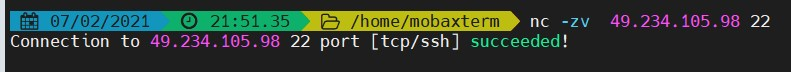
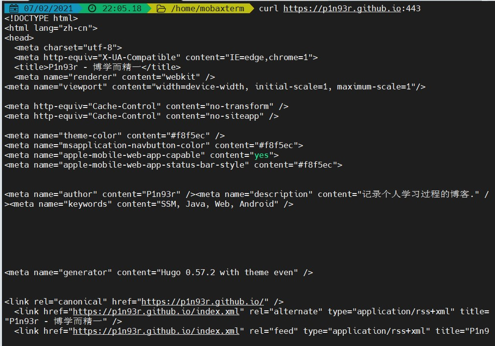
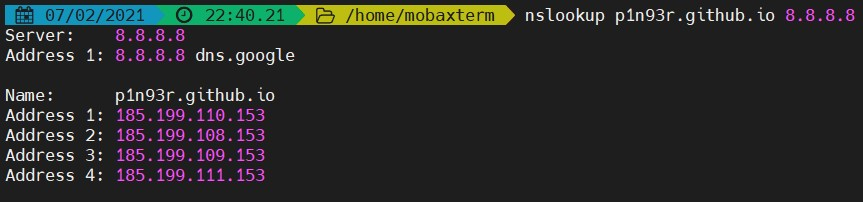
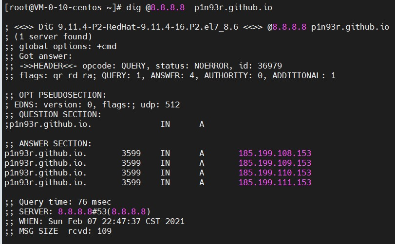

第三章：隐藏通信隧道技术

文章目录
基础知识
概述
下面所说的隧道，就是一种绕过端口屏蔽的通信方式，其实也就是使用不同协议的通信，以达到绕过防火墙的目的。常见的隧道如下：
- 网络层：IPv6、ICMP隧道、GRE隧道。
- 传输层：TCP隧道、UDP隧道、常规端口转发。
- 应用层：SSH隧道、HTTP隧道、HTTPS隧道、DNS隧道。
判断内网连通性
判断内网是否能出网，需要综合判断各种协议和端口。 常用的内网连通性的判断方法如下：
IMCP协议(网络层)
ping命令就是基于ICMP来工作的，所以我们可以使用ping来判断IMCP协议的连通性，例如如下命令：
1 2 3 |
ping www.baidu.com # linux下需要指定-c选项，否则会一直ping，例如： ping -c 3 www.baidu.com |
TCP协议(传输层)
nc是基于TCP/UDP协议来进行通信的，所以我们可以使用nc工具来判断TCP协议的连通性，例如如下命令：
1 2 |
# -z选择是关闭IO，仅做扫描 nc -vz 49.234.105.98 22 |
演示如下：

HTTP协议(应用层)
测试HTTP协议的连通性，可以使用curl工具，linux下自带此工具，但是windows需要下载才能使用，例如如下命令：

DNS协议(应用层)
在进行DNS连通性检测时，通常使用nslookup和dig命令，nslookup是windows下自带的工具，而dig是linux下自带的命令。两个工具都可以指定DNS服务器进行解析。如下所示：


网络层隧道技术
网络层最常用ICMP和IPv6两个协议进行隧道传输。
IPv6隧道
文章作者 P1n93r
上次更新 2021-02-07